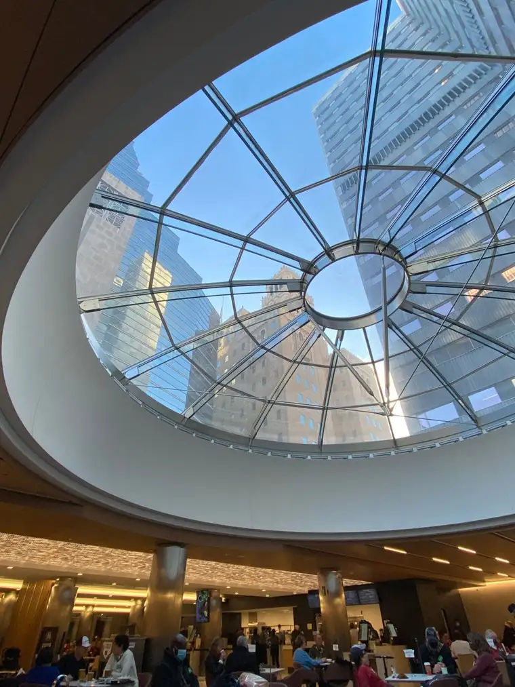
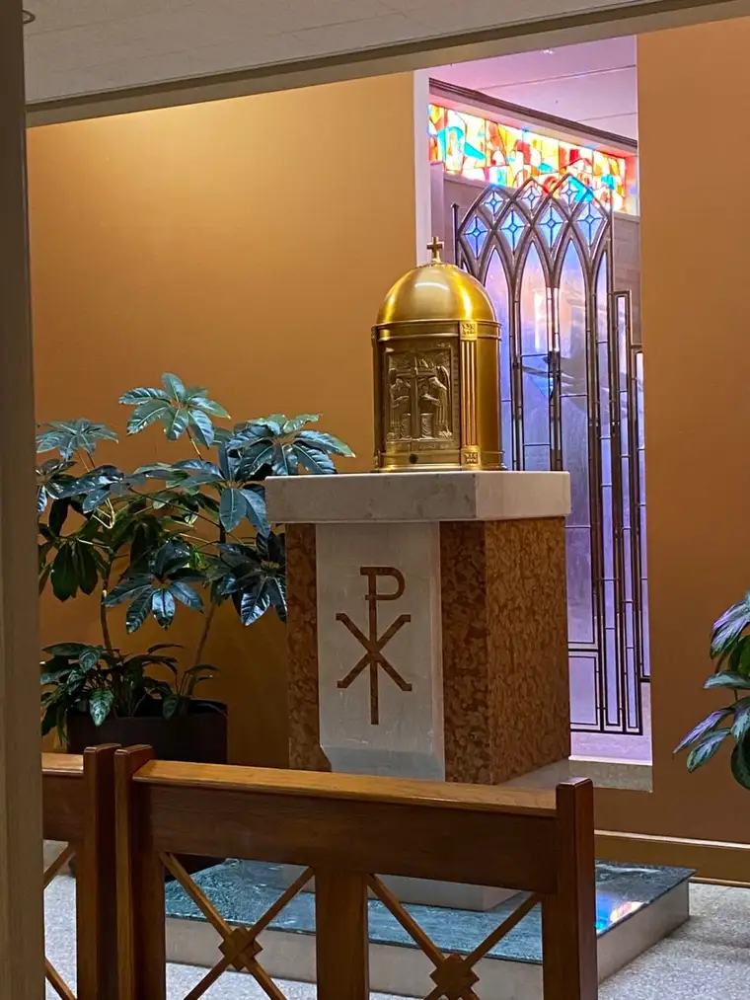
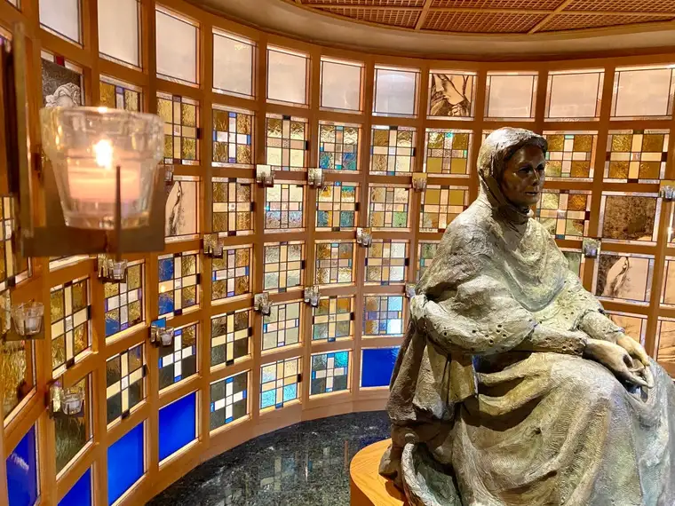
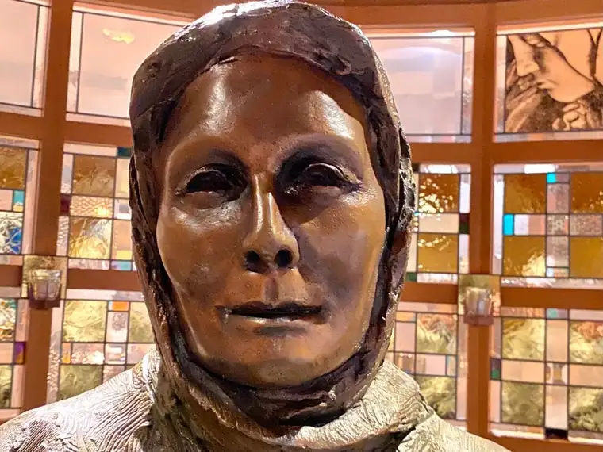
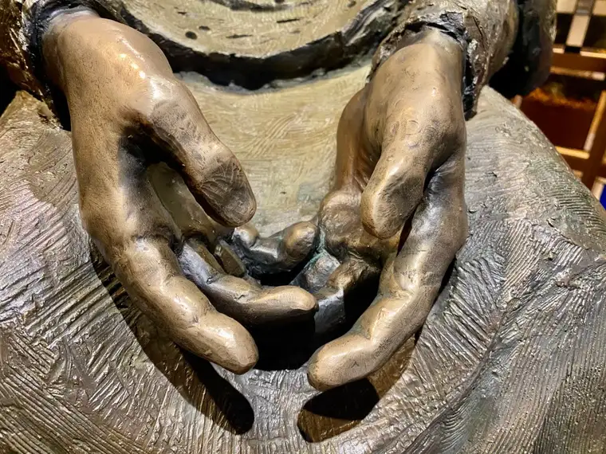
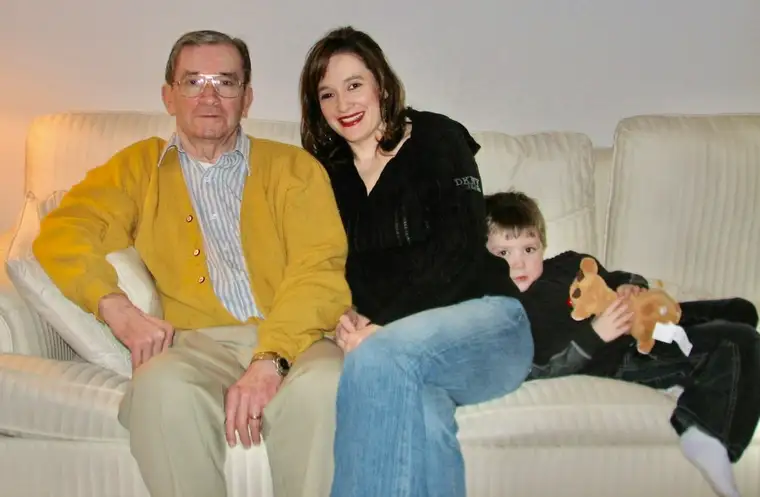
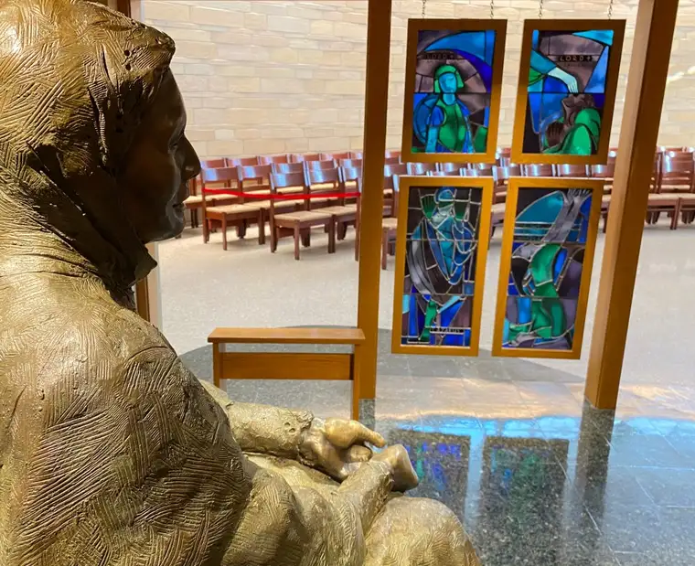

Recently, we returned to Rochester, Minn., for my husband’s yearly follow-up from his heart surgery in May 2019. I hadn’t planned to visit St. John the Evangelist Co-Cathedral this time, but midway through the day, a pause had me diverging, and on my own. And as in previous visits, I was called to this sanctuary near the Mayo campus.

Our visit happened on a beautiful, unseasonably warm January day. And, thanks be to God, in the end we left with a very positive report. At this juncture in the day, everything seemed to be going exceedingly well, despite our wondering if it was a good time to travel, with so much unrest in the country, and with Covid still hanging over us all. The sun definitely helped enhance our moods.

I share all this to lead into what happened when I returned to the church, alone. The main part was not open. But I was able to enter through the back, finding a small room that houses the tabernacle — which sits behind the Crucifix in the sanctuary on the other side of the wall.

Because someone had beat me to it, I moved on to another small chapel next to that one.

That one was vacant, except for her.

It was not the first time I’d sat here. It was not the first time I’d wept at her feet. It was not the first time she surprised me, this “Mary Waiting,” with her loving, welcoming gaze, which seemed to say, “Stop a while and rest. I have been waiting.”
I’m glad I had tissues in my purse, because I was not expecting this to happen again. The first time I’d “met” this Mary, my heart was heavy laden with the concerns of my husband’s heart, which, we’d learned, was severely leaking. It was our second go-around with his heart, and I had nothing left. The outpouring that time was profound, and almost embarrassing, because I was not alone.
For that reason, I approached her somewhat hesitantly, perhaps uncertain I could handle another such deluge. And yet, there she was, so kind and inviting. So real. So motherly. It felt so safe to sit there. And despite being alone, I didn’t really need to say anything, or think anything. I just let down my guard and allowed her to soothe my sorrow — sorrow I didn’t even realize I’d been carrying.

The one clear thought I had was: “Even a mother needs a mother.” I have a mother who is still alive, and is a wonderful presence in my life. But there is something about our spiritual mother who can reach the depths of our heart and transcend any distance. Because she is so aligned with her Son’s heart, because we are her adopted children, that connection is palpable.
Recently, I was accused of putting too much emphasis on Mary from a Protestant friend who doesn’t understand. It’s okay. I don’t expect him to understand. I would be confused, too, looking at it from the outside. But she knows. She understands. She is able to reach me at the soul level, and in a way that is hard to explain, though I’m sure I’m not the only one to have experienced this.
Most of all, though, I want to emphasize my takeaway from that day: It’s okay to need a mother, even if you are a mother, or a father, or even grandmother or grandfather. We all need a mother. And if you, like me, find Mary to be a comfort, by all means, draw near. Draw just as near as you need. She will not repel back in disgust at your wounds or worries. She will just be there. And she will keep drawing you toward her Son.
This visit collided with my father’s death eight years ago, and I have no doubt this explains part of the reason I found myself weeping before “Mary Waiting” again. His own mother, also Mary, whom I never had a chance to meet, certainly was in that moment, too, along with all those who have loved and prayed for me my whole life. And yes, my father, from the other side of the veil.

It also coincided with a radio segment that discussed the loss of a parent. The portion that was perfect for me to hear that day comes right at the beginning of the hour-long show with Dr. David Anders.
And, it coincided with my focus on light, and a Scripture verse my mother shared from a magazine clipping recently, from 1 John 1:5: “This is the message we have heard from him and declare to you; God is light; in him there is no darkness at all.”

A reflection that followed noted: “Isn’t it powerful to consider how we, along with other believers, come together by the light of Christ? We don’t have to force that light into our lives. Rather, we can rest in knowing that God himself is our light, and by his very nature, he will fill the darkness of our lives with the luminous hope of Christ.”
I bring these thoughts to you, now, as a gift. May the light be bright before you as we journey together along this path, in this year of 2021.
Q4U: How have you been drawn to the light ?